Semana 1 · aulas 1 a 4
Guia de instalação
Objetivo da primeira semana: Flutter, Git e GitHub a funcionar no teu portátil, com a app de exemplo a correr num telemóvel Android ou no emulador. A instalação começa na aula 1, enquanto os downloads correm durante a parte teórica, e termina em casa ao longo da semana. Este guia dá prioridade ao Windows, que é o sistema da maioria da turma; macOS e Linux têm secções próprias mais curtas. As capturas de ecrã foram feitas em macOS; no Windows as janelas do VS Code e do Android Studio são iguais.
- Pasta de trabalho: cria
C:\dev(Windows) ou~/dev(macOS e Linux). Tudo o que instalares ou clonares vai para aí. - Nunca dentro do OneDrive, Documentos, Ambiente de Trabalho ou Program Files. No Windows, Documentos e Ambiente de Trabalho costumam estar sincronizados com o OneDrive, e isso parte o Flutter e o Git.
- Sem espaços nem acentos no caminho. Se o teu utilizador do Windows se chama
João Silva, é mais uma razão para usarC:\deve nãoC:\Users\João Silva\.... - Espaço em disco: pelo menos 15 GB livres. Android Studio e SDK ocupam cerca de 8 GB; Flutter, 2 GB.
Downloads e instalação são dois momentos diferentes
Os ficheiros descarregados (os instaladores) ficam na pasta Transferências do browser, e não interessa onde. Só ao correr cada instalador é que o programa se instala, e na maioria dos casos sem perguntar onde. O único momento em que se escolhe uma pasta é o download do Flutter SDK a partir do VS Code, e aí a resposta é C:\dev.
| Download | O que é | Ao instalar |
|---|---|---|
Git for Windows (Git-…-64-bit.exe) | Instalador | Instala-se em Program Files\Git sem perguntar. Só carregar em Next; confirmar o Credential Manager. |
VS Code (VSCodeUserSetup-x64-….exe) | Instalador | Instala-se em AppData\Local\Programs sem perguntar. Só a caixa Add to PATH interessa. |
Android Studio (android-studio-…-windows.exe) | Instalador | Instala-se em Program Files\Android sem perguntar. No primeiro arranque, Standard põe o SDK em AppData\Local\Android\Sdk; só Custom pergunta onde. |
| Flutter SDK | Não é um download manual | O botão Download SDK do VS Code descarrega-o diretamente para a pasta escolhida: C:\dev. É a única escolha de pasta em toda a instalação. |
No fim, os instaladores podem ser apagados das Transferências; não fazem falta.
Onde fica cada coisa
A regra do C:\dev aplica-se ao Flutter SDK e aos teus projetos. Os programas instalam-se nas pastas por defeito.
| O quê | Onde fica | Notas |
|---|---|---|
| Git, VS Code, Android Studio | Pasta por defeito do instalador (Program Files ou AppData\Local) | São programas; não há razão para os mover. |
| GitHub | Não se instala | É um serviço web. O que instalas é o Git; o GitHub é onde o Git envia as cópias. |
| Flutter SDK | C:\dev\flutter | É uma pasta que o Flutter atualiza sozinho; precisa de um caminho simples e fora do OneDrive. |
| Projetos e repositórios clonados | C:\dev\nome-do-projeto | Cada flutter create e cada git clone vai para aqui. |
| Android SDK | Por defeito C:\Users\<nome>\AppData\Local\Android\Sdk | Serve se o teu nome de utilizador não tiver espaços nem acentos. Se tiver, ver a caixa abaixo. |
C:\Users\João Silva, o Gradle e o NDK vão falhar com caminhos do SDK e das caches. Três ajustes, uma vez:
- No primeiro arranque do Android Studio escolhe a instalação Custom e define Android SDK Location como
C:\dev\Android\Sdk. Se já instalaste, muda em SDK Manager → Android SDK Location → Edit. - Cria duas variáveis de ambiente do utilizador (menu Iniciar → variáveis de ambiente → Editar as variáveis de ambiente da conta → Novo):
GRADLE_USER_HOME=C:\dev\.gradleePUB_CACHE=C:\dev\.pub-cache. - Fecha e reabre os terminais e o VS Code. Confirma com
flutter doctor -vque o Android SDK aparece emC:\dev\Android\Sdk.
Já tens alguma destas ferramentas?
Quem vem do 1.º ano tem muitas vezes o VS Code instalado; o Git, em regra, não. Num terminal (menu Iniciar → Terminal):
git --version
code --version- Git "não é reconhecido": o caso habitual. Instalar o Git for Windows (Passo 1).
- Git responde com 2.4x ou superior: está feito. Confirmar que o Credential Manager existe (
git config --global credential.helperdeve respondermanager); se não, reinstalar o Git for Windows por cima. - VS Code já instalado: Help → Check for Updates (a extensão Flutter precisa de uma versão recente) e passar diretamente ao Passo 2, o Flutter SDK, que é um download de 2 GB e convém começar cedo.
- Projetos antigos em Documentos ou no OneDrive: não faz mal; os desta UC vão para
C:\dev.
Ordem recomendada na aula 1
Os downloads são a parte lenta. Arranca-os por esta ordem nos primeiros minutos da aula e deixa-os correr durante a teoria. Os tamanhos são aproximados.
| # | O quê | Tamanho | Onde |
|---|---|---|---|
| 1 | Android Studio (instalador) | 1,2 GB, depois mais 3 a 4 GB de SDK no primeiro arranque | developer.android.com/studio |
| 2 | Git | 70 MB | git-scm.com/downloads (no macOS vem com as ferramentas do Xcode; no Linux, pelo apt) |
| 3 | Visual Studio Code | 100 MB | code.visualstudio.com |
| 4 | Flutter SDK (pela extensão do VS Code) | 1,5 a 2 GB | Passo 2 abaixo; só depois de o VS Code estar instalado |
| 5 | Conta GitHub | — | github.com/signup, enquanto esperas |
Instalar pela mesma ordem à medida que os downloads terminam. O Android Studio pode ficar a descarregar o SDK em segundo plano enquanto o resto se instala.
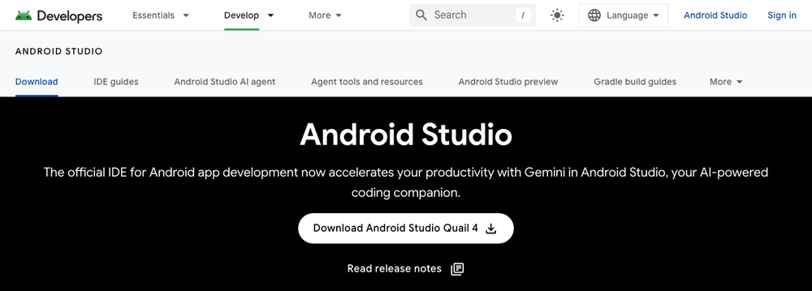
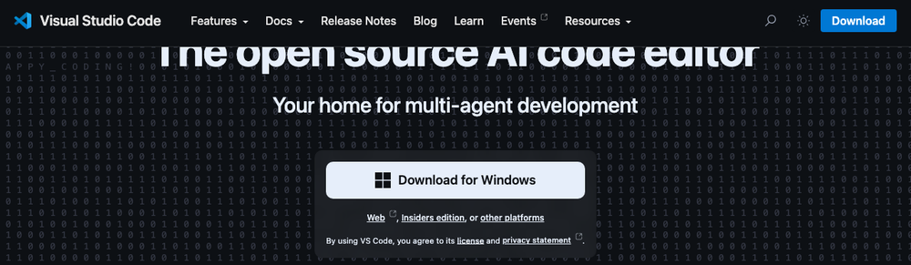
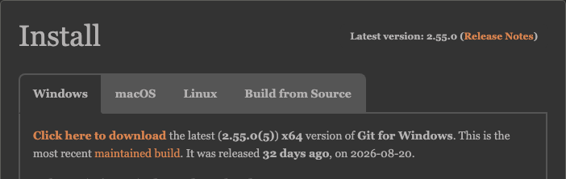
Windows, passo a passo
Testado com Windows 10 e 11 de 64 bits. Precisas de uma conta com permissão para instalar programas.
Passo 1: Git, VS Code e Android Studio
- Git for Windows. Corre o instalador com as opções por defeito, com duas confirmações: em Choosing the default editor escolhe Use Visual Studio Code as Git's default editor (se o VS Code já estiver instalado; senão deixa o Vim, muda-se depois), e confirma que Git Credential Manager está selecionado. É ele que te vai deixar entrar no GitHub pelo browser sem escrever passwords.
- Visual Studio Code. Instalador User Installer. Marca Add to PATH e Add "Open with Code" action. No fim, abre-o e instala a extensão Flutter (autor Dart Code) pelo menu Extensions, Ctrl+Shift+X, escrevendo "Flutter" na caixa de pesquisa. É a primeira da lista.
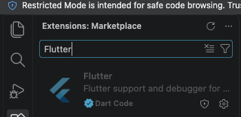
Extensions → pesquisa "Flutter" → Flutter, de Dart Code. Traz a extensão Dart com ela. - Android Studio. Instalador com as opções por defeito. No primeiro arranque escolhe a instalação Standard e aceita as licenças: descarrega o SDK, as platform-tools e um emulador. Deixa correr; volta aqui quando terminar. No fim aparece o ecrã inicial abaixo.
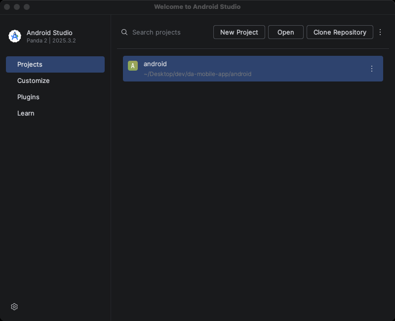
Ecrã inicial do Android Studio. O menu de três pontos, à direita de Clone Repository, é o More Actions: é por aí que se chega ao SDK Manager e ao Device Manager. - Modo de programador do Windows. O Flutter precisa dele para criar symlinks quando compila plugins. Abre o menu Iniciar, escreve Definições de programador (ou corre
start ms-settings:developersnum terminal) e liga o interruptor Modo de programador; confirma o aviso. Sem isto, mais tarde aparece o erroBuilding with plugins requires symlink support.Esquema (não é uma captura). No Windows 10 a página chama-se Para programadores e está em Atualização e Segurança.
Passo 2: Flutter SDK pelo VS Code
- No VS Code abre a paleta de comandos, Ctrl+Shift+P, escreve
flutter newe escolhe Flutter: Create New Project (a documentação ainda lhe chama "Flutter: New Project"; é o mesmo comando).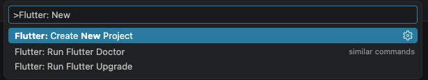
A paleta de comandos é a caixa que aparece no topo com Ctrl+Shift+P. Se não aparecer nenhum comando "Flutter", a extensão não está instalada ou a pasta está em modo restrito (ver abaixo). - Quando perguntar pelo SDK, escolhe Download SDK.
- Na janela de pasta escolhe
C:\dev. O SDK fica emC:\dev\flutter. - Carrega em Clone Flutter e espera. Se parecer parado mais de 15 minutos, cancela e repete.
- Quando aparecer, carrega em Add SDK to PATH. Se aparecer um aviso sobre Google Analytics, carrega em OK.
- Fecha o VS Code e todos os terminais e volta a abrir. O PATH só se aplica a janelas novas.
- Abre um terminal novo (menu Iniciar → Terminal ou PowerShell) e confirma:
Deve responder com Flutter 3.4x e Dart 3.1x. Se disser queflutter --versionflutternão é reconhecido, vê os problemas frequentes.
C:\dev (fica C:\dev\flutter). Depois: menu Iniciar → escreve variáveis de ambiente → Editar as variáveis de ambiente da conta → em Variáveis de utilizador abre Path → Novo → escreve C:\dev\flutter\bin → OK em tudo. Fecha e reabre os terminais.Passo 3: SDK do Android e licenças
- No Android Studio: ecrã inicial → menu de três pontos (More Actions) → SDK Manager. Abre a janela Settings na secção Android SDK.
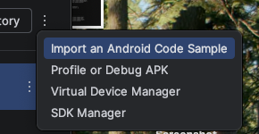
O menu More Actions. Aqui estão o SDK Manager e o Virtual Device Manager. - Separador SDK Platforms: a plataforma mais recente (API 36 ou superior) deve estar com o estado Installed. A linha Android SDK Location no topo diz onde o SDK ficou; anota-a.
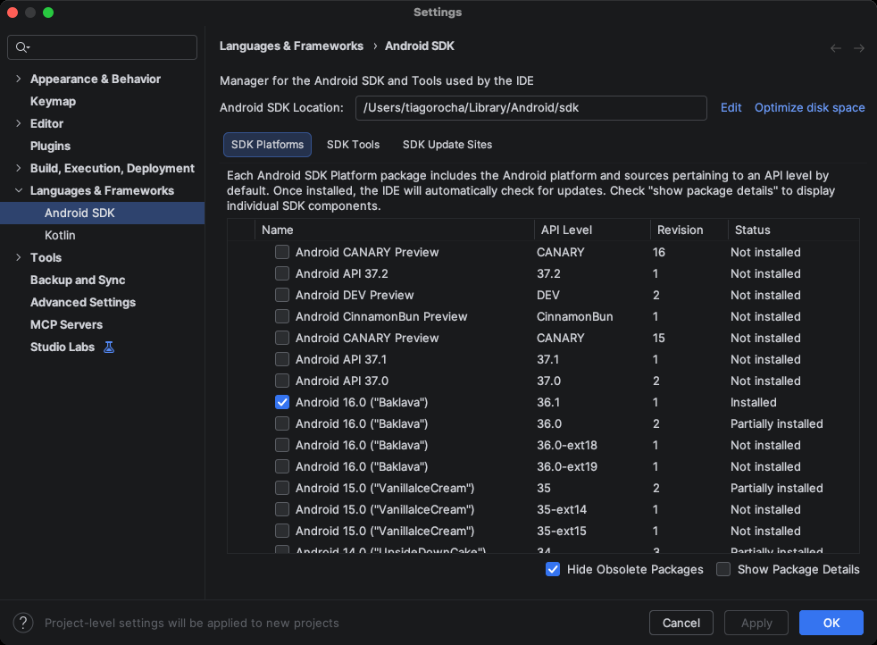
SDK Platforms. Basta uma plataforma recente instalada. A localização do SDK está na caixa do topo. - Separador SDK Tools: marca Android SDK Command-line Tools (latest), além de Build-Tools, Platform-Tools e Emulator, e carrega em Apply e depois OK. As command-line tools são o componente que mais vezes falta.
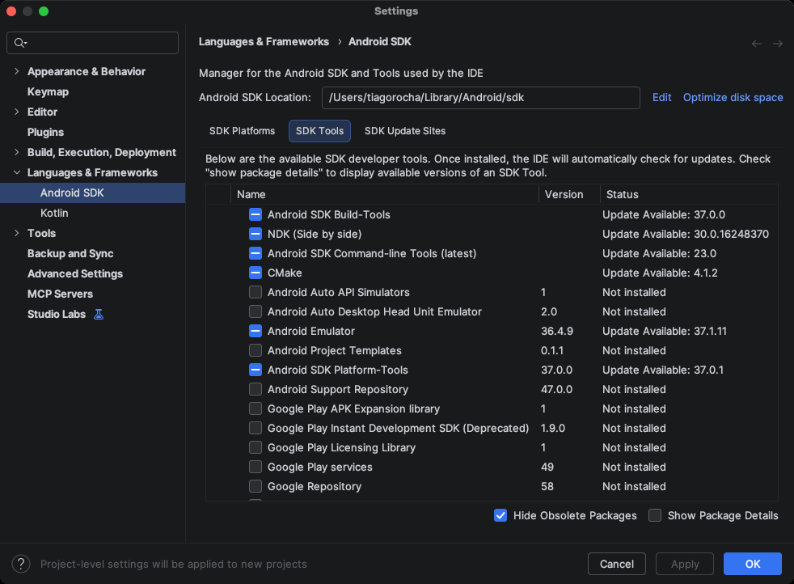
SDK Tools. Os quatro que interessam: Build-Tools, Command-line Tools (latest), Emulator e Platform-Tools. CMake e NDK não são precisos agora. - Num terminal aceita as licenças, respondendo y a todas:
flutter doctor --android-licenses - Diagnóstico:
Precisas de ✓ em Flutter, Android toolchain e Android Studio. Avisos sobre Visual Studio (é para apps de desktop Windows) e Chrome podem ser ignorados.flutter doctor
O que é o PATH, e quando é que precisas de mexer nele
Quando escreves flutter num terminal, o Windows tem de descobrir onde está o programa com esse nome. Procura-o numa lista de pastas chamada PATH. Se a pasta C:\dev\flutter\bin não estiver nessa lista, o Windows responde que o comando não é reconhecido, mesmo com o Flutter instalado.
O PATH é uma variável de ambiente: um valor com nome, guardado pelo Windows, que todos os programas podem ler. Não é um ficheiro que edites; altera-se numa janela de definições. O botão Add SDK to PATH do VS Code faz essa alteração por ti, e em regra não precisas de fazer mais nada. Só mexes à mão se, num terminal novo, flutter --version continuar a dizer que o comando não é reconhecido.
Alterar o PATH à mão (só se precisares)
- Abre o menu Iniciar e escreve variáveis de ambiente. Escolhe Editar as variáveis de ambiente da conta (em inglês, Edit environment variables for your account). Abre-se a janela Variáveis de Ambiente.
- Na metade de cima, Variáveis de utilizador, seleciona a linha Path e carrega em Editar….
- Na janela seguinte carrega em Novo, escreve
C:\dev\flutter\bine carrega em OK. Depois OK na janela anterior, e OK outra vez. - Fecha todos os terminais e o VS Code, abre um terminal novo e corre
flutter --version.
GRADLE_USER_HOME e PUB_CACHE, na caixa dos utilizadores com acentos no nome, criam-se na mesma janela: em Variáveis de utilizador carrega em Novo…, escreve o nome numa caixa e o valor na outra, e OK.Passo 4: Windows Defender e antivírus
O Defender analisa cada ficheiro que o Flutter e o Gradle escrevem, e isso torna a primeira compilação muito mais lenta; alguns antivírus chegam a apagar o flutter.bat. Adiciona C:\dev às exclusões: Definições → Privacidade e segurança → Segurança do Windows → Proteção contra vírus e ameaças → Gerir definições → Exclusões → Adicionar pasta.
macOS, passo a passo
- Terminal:
xcode-select --install. Instala as ferramentas de linha de comandos, que incluem o Git. Em Mac com chip Apple, se for pedido, instala também o Rosetta:softwareupdate --install-rosetta. - Instala o VS Code e a extensão Flutter.
- Instala o Android Studio com a instalação Standard.
- No VS Code: ⌘+Shift+P → Flutter: Create New Project → Download SDK → pasta
~/dev→ Clone Flutter → Add SDK to PATH. Fecha e reabre o Terminal.
Alternativa manual: extrai o zip para~/deve correecho 'export PATH="$HOME/dev/flutter/bin:$PATH"' >> ~/.zprofile. - SDK Manager do Android Studio: Android SDK Command-line Tools. Depois
flutter doctor --android-licenseseflutter doctor. - Opcional, para iOS: instala o Xcode pela App Store (mais de 10 GB), depois
sudo sh -c 'xcode-select -s /Applications/Xcode.app/Contents/Developer && xcodebuild -runFirstLaunch',sudo xcodebuild -license,xcodebuild -downloadPlatform iOSe o CocoaPods. Não é obrigatório na UC.
Linux (Ubuntu e Debian), passo a passo
- Pacotes de base:
sudo apt-get update -y && sudo apt-get upgrade -y sudo apt-get install -y curl git unzip xz-utils zip libglu1-mesa - Instala o VS Code (pacote .deb) e a extensão Flutter; instala o Android Studio com a instalação Standard.
- No VS Code: Ctrl+Shift+P → Flutter: Create New Project → Download SDK → pasta
~/dev→ Clone Flutter → Add SDK to PATH. Fecha e reabre o terminal.
Alternativa manual:tar -xf ~/Downloads/flutter_linux_*-stable.tar.xz -C ~/dev/eecho 'export PATH="$HOME/dev/flutter/bin:$PATH"' >> ~/.bashrc. - SDK Manager: Android SDK Command-line Tools. Depois
flutter doctor --android-licenseseflutter doctor. - Para o telemóvel por USB:
sudo apt-get install -y android-sdk-platform-tools-commonesudo usermod -aG plugdev $USER; termina a sessão e volta a entrar.
Git e GitHub
Em todos os sistemas. O objetivo é conseguires clonar, alterar, fazer commit e push a partir do VS Code até ao fim da semana.
- Conta GitHub. Cria uma em github.com/signup com o teu email da escola ou pessoal. O nome de utilizador vai aparecer no teu currículo: escolhe um que possas mostrar a um empregador. Confirma o email.
- Identidade nos commits. Num terminal, com o teu nome e o email da conta GitHub:
Se instalaste o Git antes do VS Code, define agora o editor:git config --global user.name "Nome Apelido" git config --global user.email "o-teu-email@exemplo.pt" git config --global init.defaultBranch maingit config --global core.editor "code --wait". - Teste completo. No GitHub, carrega em New repository, chama-lhe
pdm-teste, marca Add a README file e cria. Copia o URL do repositório (botão verde Code → HTTPS). Depois, no VS Code: paleta de comandos → Git: Clone → cola o URL → escolhe a pastaC:\dev(ou~/dev) → Open quando perguntar.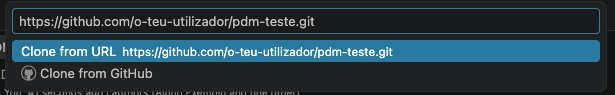
Depois de escolheres Git: Clone, colas o URL e confirmas Clone from URL. - Se aparecer um aviso amarelo Restricted Mode ao abrir a pasta, carrega em Manage e depois em Trust. O VS Code faz esta pergunta a qualquer pasta que ainda não conhece; sem confiar, as extensões, incluindo a do Flutter, ficam desligadas.
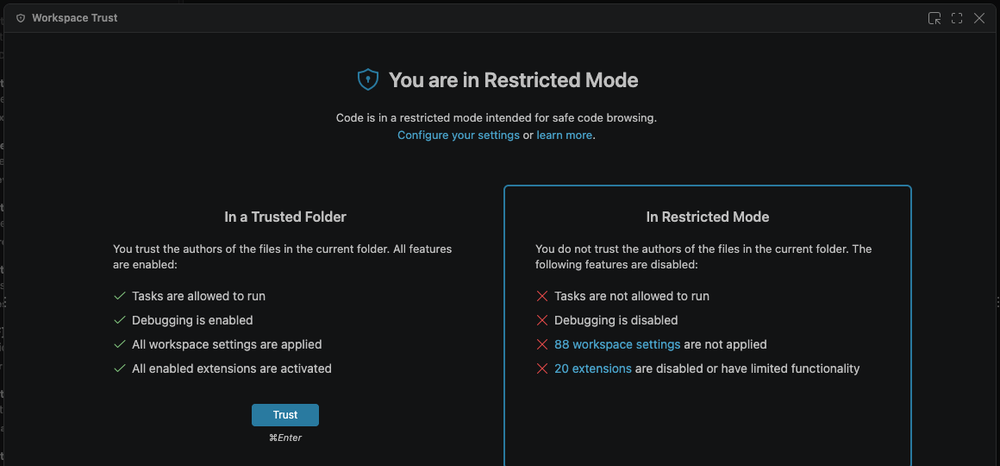
Restricted Mode. Carrega em Trust para as extensões funcionarem nesta pasta. - Edita o
README.md, acrescenta uma linha, grava (Ctrl+S). Abre a vista Source Control: ícone dos três círculos ligados na barra da esquerda, ou paleta → View: Show Source Control. Escreve uma mensagem na caixa, carrega em Commit e depois em Sync Changes (ou Publish Branch).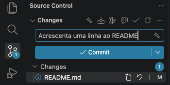
Source Control. Mensagem, Commit, e depois Sync Changes para enviar ao GitHub. - Na primeira vez o Git Credential Manager abre o browser para autorizares o acesso ao GitHub. Autoriza. Não voltas a precisar de password neste computador.
- Abre o repositório no GitHub e confirma que a alteração lá está. A partir daqui o Git está a funcionar.
git config --global core.longpaths true evita erros com caminhos compridos nos projetos Flutter; core.autocrlf fica com o valor por defeito do instalador (true), que é o correto no Windows.Onde correr a app: telemóvel ou emulador
Precisas de um dos dois até à aula de sexta-feira; na primeira aula não é necessário nenhum. O telemóvel é mais rápido e mais real; o emulador serve se não tiveres Android ou cabo, mas pede um portátil com 16 GB de RAM para ser agradável.
Opção A: telemóvel Android
- Opções de programador. Definições → Acerca do telemóvel → carrega 7 vezes em Número de compilação (em alguns modelos está em Informações do software ou Versão).
- Depuração USB. Definições → Sistema → Opções de programador → Depuração USB. Em Xiaomi e Redmi ativa também Instalar via USB.
- Cabo. Usa um cabo de dados; muitos cabos baratos só carregam. No telemóvel escolhe Transferência de ficheiros se perguntar, e aceita Permitir depuração USB para este computador, com "Permitir sempre".
- Windows: se o telemóvel não aparecer no passo seguinte, instala o driver USB do fabricante. Para Google Pixel e muitos outros, o Google USB Driver instala-se pelo SDK Manager, separador SDK Tools.
- Confirma:
Deve aparecer o modelo com android-arm64. Se aparecer unauthorized, há um pedido à espera no ecrã do telemóvel.flutter devices
adb pair seguindo este guia. É mais lento que o cabo.Opção B: emulador Android
- No Windows, o emulador precisa da Plataforma de Hipervisor do Windows. O Android Studio pede para a ativar na primeira vez e reinicia o computador. Se não pedir: menu Iniciar → Ativar ou desativar funcionalidades do Windows → marca Plataforma de Hipervisor do Windows → OK → reinicia.
- Ecrã inicial do Android Studio → menu de três pontos → Virtual Device Manager. Abre o Device Manager; carrega no + para criar um dispositivo.
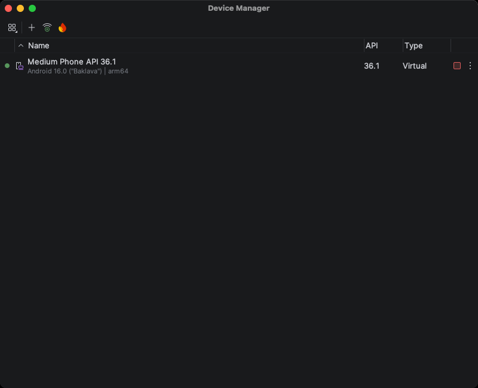
Device Manager. O + cria um dispositivo virtual; o triângulo à direita de cada linha arranca-o. - Escolhe Medium Phone ou um Pixel recente, Next, aceita a imagem de sistema sugerida (descarrega cerca de 1 GB), Finish.
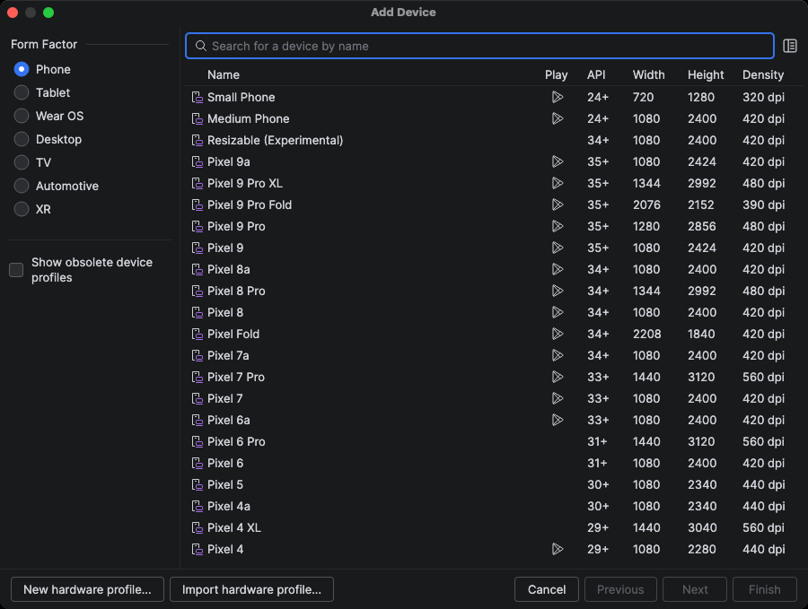
Add Device. Qualquer telefone da lista serve; Medium Phone é o mais leve. - Arranca-o pelo triângulo no Device Manager. Quando o ecrã do Android aparecer, confirma num terminal:
flutter emulators flutter devices
Verificação e primeira app
O terminal pode ser o do Windows (menu Iniciar → Terminal ou PowerShell) ou o do VS Code: menu Terminal → New Terminal, ou Ctrl+`. É o mesmo.
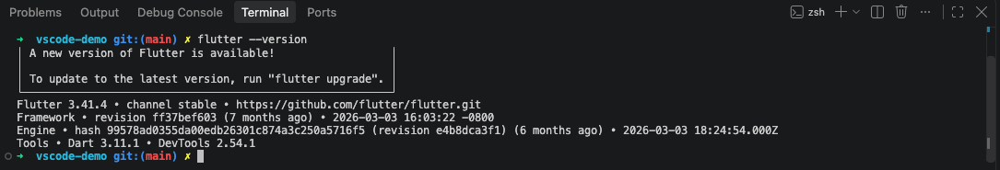
flutter --version a responder. É este tipo de resposta que confirma que o Flutter está no PATH.- Diagnóstico completo:
flutter doctor -v - Cria e corre a app de exemplo, dentro da pasta de trabalho:
No macOS e Linux,cd C:\dev flutter create ola_mobile cd ola_mobile flutter runcd ~/dev. Se houver mais do que um dispositivo (telemóvel e emulador), o Flutter pergunta qual usar. A primeira compilação descarrega o Gradle e demora vários minutos. Quando a app abrir, carrega no botão + e vê o contador subir. - Com a app a correr, abre a pasta
ola_mobileno VS Code, editalib/main.dart, muda um texto, grava, e carrega em r no terminal. A alteração aparece no telemóvel sem reiniciar: é o hot reload.
Problemas frequentes
| Mensagem ou sintoma | Causa | Solução |
|---|---|---|
flutter não é reconhecido como comando | PATH sem flutter\bin, ou terminal aberto antes da alteração | Fecha todos os terminais e o VS Code e volta a abrir. Se persistir, confirma o PATH (secção manual acima): tem de apontar para a pasta bin dentro de flutter. |
Building with plugins requires symlink support | Modo de programador do Windows desligado | start ms-settings:developers e liga o Modo de programador. |
Unable to locate Android SDK | Flutter não encontrou a pasta do SDK | No SDK Manager o caminho está no topo (normalmente %LOCALAPPDATA%\Android\Sdk). Corre flutter config --android-sdk "esse\caminho". |
cmdline-tools component is missing | Falta o componente | SDK Manager → SDK Tools → Android SDK Command-line Tools (latest) → Apply. |
Android license status unknown | Licenças por aceitar | flutter doctor --android-licenses. |
Erros estranhos ao criar projetos ou pub get lento e a falhar | Projeto ou SDK numa pasta do OneDrive, ou caminho com espaços ou acentos | Move tudo para C:\dev. Confirma em Definições do OneDrive que C:\dev não está sincronizada. |
flutter.bat desapareceu ou "ficheiro em quarentena" | Antivírus | Adiciona C:\dev às exclusões e reinstala o SDK. |
Filename too long no git ou no build | Limite de caminhos do Windows | git config --global core.longpaths true; mantém os projetos perto da raiz, como em C:\dev. |
Telemóvel não aparece em flutter devices | Cabo só de carga, depuração USB desligada, pedido de confiança por aceitar, driver em falta | Muda de cabo primeiro. Depois segue de novo a secção do telemóvel, um item de cada vez. |
Unsupported class file major version, ou Gradle version is incompatible with the Java version | O Flutter apanhou um Java instalado à parte (por exemplo um JDK 25 ou 26 em JAVA_HOME) que o Gradle do projeto não suporta | Vê a linha Java version em flutter doctor -v. Aponta o Flutter para o Java do Android Studio: flutter config --jdk-dir "C:\Program Files\Android\Android Studio\jbr" (no macOS, /Applications/Android Studio.app/Contents/jbr/Contents/Home). Nos repositórios das aulas faz git stash -u && git pull: o Gradle já vem numa versão que aceita qualquer Java de 17 a 26. |
| Erro de Gradle ou download interrompido na primeira compilação | Rede | Repete flutter run. Se continuar, apaga a pasta .gradle na tua pasta pessoal e repete. |
| Push recusado ou pede password repetidamente | Credential Manager não instalado ou autorização não concluída | Reinstala o Git for Windows com o Git Credential Manager selecionado; no push, conclui a autorização no browser. |
| Tudo muito lento | Emulador ou Android Studio a consumir a RAM | Usa o telemóvel; fecha o Android Studio quando trabalhas no VS Code. |
Se nada disto resolver: resolução de problemas oficial, ou o fórum do Moodle com a mensagem de erro completa.
Checklist da semana 1
Fim da aula 1 (segunda)
- Android Studio, Git e VS Code instalados; SDK do Android a descarregar ou descarregado.
- Extensão Flutter no VS Code; download do Flutter SDK iniciado.
- Conta GitHub criada.
Trabalho de casa até terça
flutter --versionresponde num terminal novo.- Command-line tools instaladas e licenças aceites.
git configcom nome e email feitos.
Fim da aula 2 (terça)
- Repositório
pdm-testeclonado, com um commit teu enviado para o GitHub.
Fim da aula 3 (quarta)
flutter doctorcom ✓ em Flutter, Android toolchain e Android Studio.- Um dispositivo em
flutter devices: telemóvel por USB ou emulador criado.
Aula 4 (sexta)
- App de exemplo a correr no telemóvel ou no emulador, com hot reload.
Aula 5 (segunda, 28/9)
- Clone do repositório da aula 5 e primeiro ecrã da app.